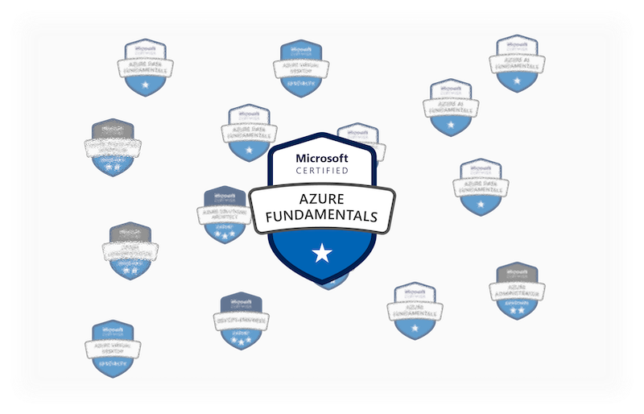
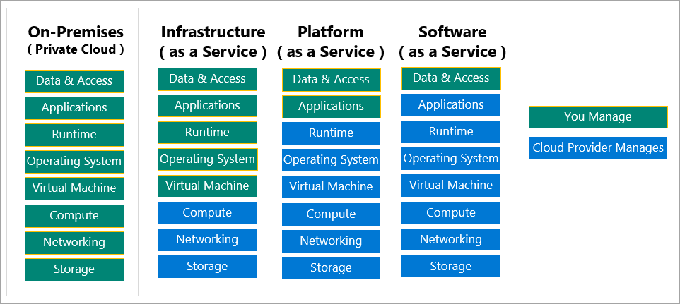

Microsoft Azure Fundamentals Certification

Azure Fundamentals (AZ-900) gives an overview of Microsoft's cloud solution. It's a perfect starting point to enter into the cloud world. The name itself has spoiled what to expect in this certification. It covers all the basics that you need to know about Microsoft Azure. Since it is a fundamental level, the learning path is designed to be learner-friendly. It won't be too difficult to pass the certification exam even for people without prior technical or cloud knowledge.
At a Glance
At a Glance
- Introduction
- Model 1 - Describe Core Azure Concept
- Model 2 - Describe Core Azure Services
- Model 3 - Describe Core Solution and Management Tools on Azure
- Model 4 - Describe General Security and Network Security Features
- Model 5 - Describe Identity, Governance, Privacy, and Compliance
- Model 6 - Describe Core Azure Cost Management and Service Level
site map
Module 1 - Describe Core Azure Concept
|- Advantages of cloud computing
|- Capital expenses vs Operating expenses
|- Cloud Service Models
|- Azure Accounts
Model 2 - Describe Core Azure Services
|- Azure compute services
|- Azure networking services
|- Azure Storage services
|- Azure database and analytics services
Model 3 - Describe Core Solution and Management Tools on Azure
|- Azure IoT services
|- AI services
|- Serverless technologies
|- Tools to build better solutions for organizations
|- Tools for managing and configuring Azure environment
|- Monitoring services for visibility, insight, and outage mitigation
Model 4 - Describe General Security and Network Security Features
|- Protect against security threats on Azure
|- Secure network connectivity on Azure
Model 5 - Describe Identity, Governance, Privacy, and Compliance
|- Authentication vs Authorization
|- Azure Active Directory
|- Build a cloud governance strategy on Azure
|- Azure Role-Based Access Control
|- Resource Locks
|- Policy, Initiative, and Blueprint
|- Tags
|- Cloud Adoption Framework
|- Examine privacy, compliance, and data protection standards on Azure
Model 6 - Describe Core Azure Cost Management and Service Level
|- Plan and manage your Azure costs
|- Total Cost of Ownership
|- Azure Pricing
|- How to minimize cost
|- Choose the right Azure services by examining SLAs and service lifecycle
|- Azure Service Level Agreements
|- Azure Lifecycle
Updates on the Official Learning Materials
As of May 5, 2022, the english version of AZ-900 will be updated. Some contents in this page might be outdated!
Introduction
Azure is a Microsoft cloud service. It gives private or business users the ability to build, manage, and deploy applications on the network (aka cloud) by using Microsoft's tools and frameworks. Microsoft Azure can be assessed through a web portal called "Azure portal". Microsoft also provides the freedom of using third parties solutions and services integrated directly with Microsoft Azure.
The Microsoft Azure Fundamentals Certificate or known as AZ-900 is a fundamental level knowledge certificate for entry-level candidates. The certificates build a foundational knowledge of Microsoft cloud services. It consists of 6 modules to describe each important feature of Azure services. This certification is built for all levels of expertise whether or not to have technical knowledge. It is designed to provide an overview of Azure services.
Module 1 - Describe Core Azure Concept
Link: Model 1 - Describe Core Azure Concept
What to learn
- Azure subscriptions and management groups.
- Azure resources, resource groups, and Azure Resource Manager.
- Azure regions, region pairs, and availability zones.
- Describe the basic concepts of cloud computing.
- Determine whether Azure is the right solution for your business needs.
- Differentiate between the different methods of creating an Azure subscription.
- Identify the benefits and considerations of using cloud services
- Describe the differences between categories of cloud services
- Describe the differences between types of cloud computing
Cloud computing is a computing service over the internet (aka cloud). Users can use the service and are normally charged with a pay-as-you-go pricing model. The benefit of using the cloud is that it has lower operating costs (OpEx), run infrastructure more efficiently, and can be scaled as the business needs.
Microsoft has described cloud models into 3 categories;
1) Public Cloud: services that are offered over the public internet and available to anyone. For instance, Microsoft Azure, Amazon Web Services, Google Cloud Platform
2) Private Cloud : are exclusively by users from one business or organization. A private cloud can be physically located at its own on-site (on-premises) data center or can be hosted by a third party.
3) Hybrid Cloud: is a combination of public cloud and private cloud by allowing data and applications to be shared between them
Comparison between cloud models
| Public Cloud | Private Cloud | Hybrid Cloud |
|---|---|---|
| No capital expenditures (no CapEx) to scale up | Hardware must be purchased for start-up and maintenance (High CapEx) | Most flexibility |
| Applications can be quickly provisioned and deprovisioned | Organizations have complete control over resources and security | Organizations determine where to run their applications |
| Organizations pay only for what they use (OpEx) | Organizations are responsible for hardware maintenance and updates (OpEx) | Organizations control over security, compliance, or legal requirements |
Advantages of cloud computing
- High Availability: is the ability to keep services up and running for long periods of time
- Scalability: is the ability of a system to handle growth of users or work (mostly manually)
- Elasticity: is the ability of a system to automatically grow and shrink based on app demand
- Agility: is the ability to react quickly to changes in demand (automatically)
- Geo-distribution: (or Fault Tolerance) is the ability of a system to handle faults in a service like power, network, or hardware failures
- Disaster recovery: is the ability to recover from an event which has taken down a cloud service
Capital expenses vs Operating expenses
- Capital Expenditure (CapEx) is the spending of money on physical infrastructure
- Operational Expenditure (OpEx) is spending money on services or products now, and being billed for them now (typically on monthly basis)
Cloud Service Models
| IaaS | PaaS | SaaS | |
|---|---|---|---|
| Name | Infrastructure-as-a-Service | Platform-as-a-Service | Software-as-a-Service |
| Description | You configure and manage the hardware for your application | Focus on application development | Pay-as-you-go pricing model |
| Advantages | The most flexible cloud service | Platform management is handled by the cloud provider | Users pay for the software they use on a subscription model |
| Examples | Azure VM, Amazon EC2, GCP Compute Engine | Azure SQL Database, API Management, Azure App Services | Office 365, salesforce |

Azure Accounts
To use Azure services, it is required to have an Azure Subscription. A subscription can be created through an Azure Account. An account can have more than one subscription.
| Azure Free Account | Azure Free Student Account |
|---|---|
| Free access to popular Azure products for 12 months | Free access to certain Azure services for 12 months |
| A credit to spend for the first 30 days | A credit ($100) to use in the first 12 months |
| Access to more than 25 products that are always free | Free access to certain software developer tools |
Model 2 - Describe Core Azure Services
Link: Model 2 - Describe Core Azure Services
What to learn
- Understand the breadth of services available in Azure including compute, network, storage, and database
- Identify virtualization services such as Azure Virtual Machines, Azure Container Instances, Azure Kubernetes Service, and Azure Virtual Desktop
- Compare Azure's database services such as Azure Cosmos DB, Azure SQL, Azure Database for MySQL, Azure Database for PostgreSQL, and Azure's big data and analysis services
- Examine Azure networking resources such as Virtual Networks, VPN Gateways, and Azure ExpressRoute
- Summarize Azure storage services such as Azure Blob Storage, Azure Disk Storage, and Azure File Storage
Azure compute services
- Azure Virtual Machines: is a virtual computer on-demand without the need for hardware purchase (Iaas)
- Azure App Service: is a compute service for websites and apps. An- HTTP-based service for hosting web applications, REST APIs, and mobile backends
- Azure Container Instances: runs Docker containers on-demand in a managed, serverless Azure environment. A solution for any scenario that can operate in isolated containers without orchestration (Kubernetes clusters)
- Azure Kubernetes Service: Azure handles critical tasks like health monitoring and maintenance. AKS is free, pay only for the agent nodes within clusters, not for the masters
- Azure Functions: an event-driven, compute-on-demand experience that extends the existing Azure application platform with capabilities to implement code triggered by events occurring in Azure as week as on-premises systems.
- Azure Virtual Desktop: a desktop and application virtualization service that runs on the cloud
Azure networking services
- Virtual Network: (VNET) a logical representation of your network in Azure. VNETs provide logical isolation in Azure dedicated to your subscription. Contains one or more IPs or Subnets where different machines (VM) are connected.
- VPN Gateway: a virtual network gateway encrypted traffic between an Azure VNET and an on-premises location over the internet (on-premises to cloud)
- VNET Peering: enables a seamless connection of two or more VNETs in Azure. The two networks function as one in terms of connectivity (VNET to VNET)
- Express Route: extends on-premises networks into Azure over a private connection (not over public internet) with the help of a connectivity provider
Azure Storage services
- Azure Blob Storage: storage optimized for storing massive amounts of unstructured data (no DB) such as images, videos, log files, etc.
- Azure Disk Storage: are block-level storage volumes (physical disk in VMs) that are managed by Azure and used with Azure VMs
- Azure Files: fully managed file shares in Azure accessible via Service Message Block (SMB) or NFS
- Azure Blob access tiers: are tiers for storing data, divided into hot, cool, and archive
Azure database and analytics services
- Azure Cosmos DB: a globally distributed database that supports NoSQL options, with ultra-low response latency
- Azure SQL Database: is a PaaS database engine relational database with auto-scale and robust security
- Azure SQL Managed Instance: a cloud database service that combines the broadest SQL, server database engine compatibility with all the benefits of a PaaS
- Azure Database for MySQL: MySQL relational database based on the MySQL community edition
- Azure Database for PostgreSQL: PostgreSQL relational database
- Azure Synapse Analytics: an integrated analytics service that accelerates time to insight across data warehouses and big data systems. Formerly known as Azure SQL Data Warehouse
- Azure HDInsight: a cloud distribution of Hadoop components. Support popular open-source frameworks such as Hadoop, Spark, Hive, LLAP, Kafka, and more
- Azure Databricks: a data analytics platform, offers two environments for developing data-intensive applications Azure Databricks SQL Analytics and Azure Databricks Workspace
- Azure Data Lake Analytics: a technology that enables big data analytics and artificial intelligence. Provides cloud storage for diverse data (relational and non-relational data) that is less expensive than relational databases cloud storage.
Model 3 - Describe Core Solution and Management Tools on Azure
Link: Model 3 - Describe Core Solution and Management Tools on Azure
What to learn
- Choose the correct Azure Artificial Intelligence service to address different kinds of business challenges.
- Choose the best software development process tools and services for a given business scenario.
- Choose the correct cloud monitoring service to address different kinds of business challenges.
- Choose the correct Azure management tool to address different kinds of technical needs and challenges.
- Choose the right serverless computing technology for your business scenario.
- Choose the best Azure IoT service for a given business scenario.
Azure IoT services
- IoT Hub: a central message hub for bidirectional communication between IoT apps and the devices it manages
- IoT Central: an IoT application platform that simplifies the creation of IoT solutions. Helps to reduce the burden and cost of IoT management operations, and development (a fully managed SaaS solution).
- Azure Sphere: a secure, high-level application platform with built-in communication and security features. Comes with 3 parts: (1) Azure Sphere Microcontroller (MCU), (2) OS (Linux), and (3) Azure Sphere Security Services (AS3)
AI services
| Azure Machine Learning | Cognitive Services | Azure Bot Services | |
|---|---|---|---|
| Description | a could-based environment to train, deploy, automate, manage, and track ML models | a cloud-based service for REST APIs, build cognitive intelligence into applications | a managed bot development service that helps to easily connect to users via popular channel |
| Features | train, deploy, automate, manage, and track ML models | ML models for language recognitions, speech recognition, computer vision | Language Understanding (LUIS) |
| When to use | to create a machine learning model | Integrate ML into an application | need to interact with users |
Serverless technologies
- Azure Functions: an event driven, compute-on-demand code triggered events.
- Azure Logic Apps: a cloud service with low/no-code web-based service to help schedule, automate, and orchestrate tasks for business processes, and workflows
Tools to build better solutions for organizations
- Azure DevOps: a single platform for implementing DevOps deploying code using the CI/CD framework facilitating agile software development
- GitHub: is a web-based online Git repository for source code management (SCM)
- Azure DevTest Labs: a self-service sandbox environment workflow from within GitHub
Tools for managing and configuring Azure environment
- Azure Portal: a web-based, unified console to manage Azure subscriptions using a graphical user interface
- Azure PowerShell: a set of cmdlets for managing Azure resources directly from the PowerShell command line
- Azure CLI: an Azure command-line interface used to create and manage Azure resources. Available on Windows, macOS, and Linux
- Azure CloudShell: an interactive, authenticated, browser accessible shell for managing Azure resources, includes both Bash and PowerShell
- Azure model app: a mobile application on iOS and Android for managing, tracking health, and status, and troubleshooting Azure resources
- ARM templates: a JSON file that defines the infrastructure and configuration for projects. Can be used to deploy Azure resources through PowerShell and/or CLI
Monitoring services for visibility, insight, and outage mitigation
| Azure Advisor | Azure Monitor | Azure Service Health | |
|---|---|---|---|
| Description | scans Azure resource configurations and makes changes recommendations to optimize deployed resources by analyzing the current configurations of the resources present in an Azure subscription | a service that collects monitoring telemetry (logs) from a variety of on-premises and Azure sources. Azure Monitor aggregates and stores this telemetry in an Azure Log Analytics instance | notifies about Azure service incidents and planned maintenance to take action and mitigate downtime |
| When to use | cutting cost and resource optimizations | track performances and issues | notify about Azure services health in regions |
Model 4 - Describe General Security and Network Security Features
Link: Model 4 - Describe General Security and Network Security Features
What to learn
- Strengthen your security posture and protect against threats by using Azure Security Center.
- Collect and act on security data from many different sources by using Azure Sentinel.
- Store and access sensitive information such as passwords and encryption keys securely in Azure Key Vault.
- Manage dedicated physical servers to host your Azure VMs for Windows and Linux by using Azure Dedicated Host.
- Identify the layers that make up a defense in depth strategy.
- Explain how Azure Firewall enables you to control what traffic is allowed on the network.
- Configure network security groups to filter network traffic to and from Azure resources within a Microsoft Azure virtual network.
- Explain how Azure DDoS Protection helps protect your Azure resources from DDoS attacks.
Protect against security threats on Azure
- Azure Security Center:* a unified infrastructure security management system for on-premises and cloud resources. Provides security guidance** for computer, data, network, storage, app, and other services
- Azure Sentinel: a cloud-native real-time threat intelligence, management (SIEM) and security orchestration automated response (SOAR) solution
- Azure Key Vault: a cloud service for securely storing and accessing secrets through hardware security models (HSMs)
- Azure Dedicated Host: a service that provides dedicated physical servers (private) able to host one or more virtual machines in one Azure subscription (not sharing the server with others)
Secure network connectivity on Azure
- Azure Firewall: a managed, cloud-based network security service that protects the Azure Virtual Network resources. It's a fully stateful firewall as a service with built-in (comes by default) high availability and unrestricted cloud scalability.
- Azure DDoS Protection: an enhanced DDoS mitigation feature to defend against DDoS attacks
- Network Security Groups: contains security rules that allow or deny inbound network traffic to, or outbound network traffic from, several types of Azure resources. Can be applied to a Subnet or network adapter
Model 5 - Describe Identity, Governance, Privacy, and Compliance
Link: Model 5 - Describe Identity, Governance, Privacy, and Compliance
What to learn
- Explain the difference between authentication and authorization.
- Describe how Azure Active Directory provides identity and access management.
- Explain the role single sign-on (SSO), multifactor authentication, and Conditional Access play in managing user identity.
- Make organizational decisions about your cloud environment by using the Cloud Adoption Framework for Azure.
- Define who can access cloud resources by using Azure role-based access control.
- Apply a resource lock to prevent accidental deletion of your Azure resources.
- Apply tags to your Azure resources to help describe their purpose.
- Control and audit how your resources are created by using Azure Policy.
- Enable governance at scale across multiple Azure subscriptions by using Azure Blueprints.
- Explain the types of compliance offerings that are available on Azure.
- Access the Microsoft Privacy Statement, the Online Services Terms, and the Data Protection Addendum to learn what personal data Microsoft collects, how Microsoft uses it, and for what purposes.
- Gain insight into regulatory standards and compliance on Azure from the Trust Center and from the Azure compliance documentation.
- Explain Azure capabilities that are specific to government agencies.
Authentication vs Authorization
| Authentication | Authorization | |
|---|---|---|
| Short | AuthN | AuthZ |
| Description | is the process of proving that you are the who you say you are | is the act of granting an authenticated party permission to do something |
| When to use | to identify (Who you are?) | to get access (What can you do?) |
Azure Active Directory
Azure Active Directory or Azure AD is Microsoft's management service which helps employees sign in and access resources internal and external resources
| Single Sign-On (SSO) | Multi-Factor Authentication (MFA) | Conditional Access |
|---|---|---|
| * sign-in once and use all the resources * one ID for all services |
* an additional form of identification than only a password * requiring one or more authentication methods |
* to allow (or deny) users to access based on identity signals |
Build a cloud governance strategy on Azure
Azure Role-Based Access Control
or RBAC manages who have access to Azure resources, what they can do with those resources, and which resources or areas they can have access to
Resource Locks
Prevent other users in an organization from accidentally deleting or modifying critical resources. The lock overrides any permission the user might have.
- CanNotDelete - can do everything except for delete
- ReadOnly - can only read
Policy, Initiative, and Blueprint
- Policy - the definition of the conditions which want to control or govern
- Initiative - a collection of Azure Policy definitions that are grouped together towards a specific goal
- Blueprint - often used in the same sentences as the phrase "new environments"
Tags
is a key/value pair used to logically organize Azure resources, resources groups, and subscriptions into a logical taxonomy
- not inherited from Resource Groups to Resources by default
- can have one or more tags at once
- can be enforced tagging rules with Azure policies
Cloud Adoption Framework
is guidance designed to help create and implement the business and technology strategies to succeed in Azure
Examine privacy, compliance, and data protection standards on Azure
- Security - protecting the data that's entrusted to Microsoft by using strong encryption and access controls (how Microsoft protects data)
- Privacy - is about making meaningful choices for how and why data is collected and used (why and how Microsoft collects data)
-
Compliance - tells what all the standards can Microsoft comply with e.g. ISO, etc.
-
Azure Compliance Documentation - are templates audit documents that can tailor to your or your customers' needs
- Microsoft Privacy Statement - explains what, how, and why Microsoft uses the customers' data
- Online Service Terms - or OST contains all the terms and conditions for software and online services through Microsoft Commercial Licensing programs
- Data Protection Amendment - (or Data Protection Addendum) defines the data processing and security terms for online services, including data compliance, disclosure, security, transfer, and retention
- Trust Center - is a website to learn about the four foundational principles of trust: security, privacy, compliance, and transparency
Model 6 - Describe Core Azure Cost Management and Service Level
Link: Model 6 - Describe Core Azure Cost Management and Service Level
What to learn
- Use the Total Cost of Ownership Calculator to compare your current data center costs to running the same workloads on Azure.
- Describe the different ways you can purchase Azure products and services.
- Use the Pricing calculator to estimate the monthly cost of running your cloud workloads.
- Define some of the major factors that affect total cost and apply recommended practices to minimize cost.
- Describe what a service-level agreement (SLA) is and why SLAs are important.
- Identify factors, such as the service tier you choose, that can affect an SLA.
- Combine SLAs to compute a composite SLA.
- Describe the service lifecycle in Azure, including how to access new capabilities that are coming to Azure.
Plan and manage your Azure costs
Total Cost of Ownership
The term total cost of ownership is commonly used in finance to calculate and compare the cost reduction that could be obtained for using (moving to) Azure services and features, through TCO Calculator.
Azure Pricing
Azure Pricing helps to understand the cost of using Azure services and features. The calculation can be performed with the Pricing calculator
How to minimize cost
- Use Azure Advisor to monitor usage
- Use spending limits to restrict spending
- Use Azure Reservations to prepay
- Choose low-cost locations and regions
- Research available cost-saving offers
- Use Azure Cost Management and Billing to control spending
- Apply tags to identify cost owners
- Resize underutilized virtual machines
- Deallocate virtual machines during off-hours
- Delete unused resources
- Migrate from IaaS to PaaS services
- Save on licensing costs
- Choose cost-effective operating systems
- Use Azure Hybrid Benefits to repurpose software license on Azure
Choose the right Azure services by examining SLAs and service lifecycle
Azure Service Level Agreements
Azure Service Level Agreements or SLA is Microsoft's commitment to an Azure service or product. The purpose of an SLA is to provide a clear explanation of availability of a service or product.
The performance is measured in the SLA of a service and/or a composite SLA
SLA performance goals can be varied from 99.9% to 99.99%
The composite SLA can be calculated using composite multiplications of all the services that are bound together, ex: SLA of service 1 * SLA of service 2
Azure Lifecycle
The service lifecycle defines how every Azure service is released for public use. Every service in Azure will have its own service lifecycle, however, it will fall into one of the following categories:
- Private Preview - services that are only available for specific types of customers (open only to selected companies or users through invitation)
- Public Preview - all users can access these services. However, the services aren't completely finished and don't support SLAs
- General Availability - a service in this category will be accessible to everyone and will support SLAs